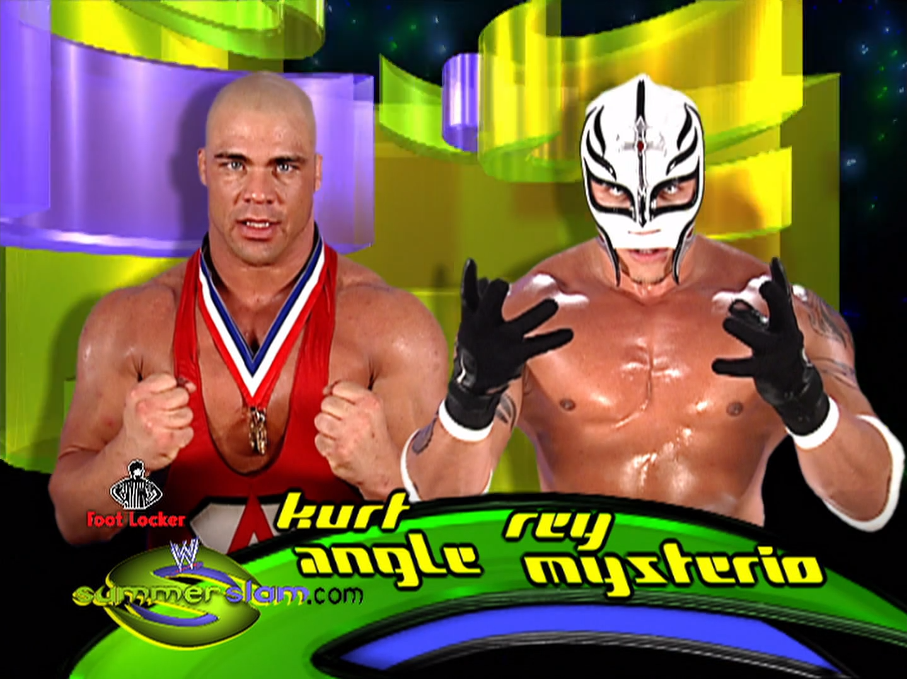

WWE King Of The Ring 2002 - Semi Final Match - 23/6/2002
Probably the best hoss fight in the WWE due to the talent of both men (yes, Test was talented) and its relatively short length. Punches, kicks, slams, brutal offense throughout. Test's kicks and clotheslines look great. EPIC big boot and near fall. Good match, unfortunately with a dead crowd.
Rating: 3.5
Recommended to casual fans.
Kurt Angle vs. Rey Mysterio

WWE SummerSlam 2002 - 25/8/2002
Fucking barnburner to start off SummerSlam. Two of the fastest guys in the company with non-stop offense for just under 10 minutes. I love Kurt's insane wheelbarrow German suplex to Mysterio. There's so many complex counters here and it all happens so quick, these guys had insane ring chemistry. The ref physically prevents Rey from doing a suicide dive (which shouldn't happen in a match) but Rey ignores him and does it anyway, covering insane distance and height. "Holy shit" chants abound. Rey puts in some serious offense and almost gets a 3-count, but Kurt counters a hurricanrana into an ankle lock and Rey has to tap. Wonderful, furiously fast match.
Rating: 4.5
Recommended to everyone.
Shawn Michaels vs. Triple H
WWE SummerSlam 2002
Unsanctioned Match
25/8/2002
First PPV match between these two, who I always thought had phenomenal chemistry as opponents, maybe more so than as friends. Match starts hot and Shawn looks very athletic as always, even skinning the cat to show off. HHH targets Shawn's fucked back, and Hebner gets pretty annoying with how often he gets in his way and yells at Triple H to stop. I get in storyline he's supposedly concerned for Shawn's safety, but it's literally an unsanctioned match. The match has had a slow pace as with many Triple H matches but it's super engaging because it gives both men time to really sell their injuries, especially Shawn and his back. Hunter forgets where his sledgehammer is and has to go hunting (no pun intended) for it. Hebner and Triple H start pushing each other around, which is actually a pretty cool spot, giving Shawn some time to regenerate. He tries to fly high but HHH sends Hebner into the ropes to knock him down. Nasty looking back drop into the chair in the middle of the ring, and a sidewalk slam into it again for good measure. The crowd are feeding off of literally every movement the men make at this point, it's really good. Shawn hits a perfect Sweet Chin Music at the perfect time, HHH blades really deep as expected and his chest is covered in blood almost immediately.
Shawn kips up and starts jumping around the ring. Cool spot as always but it's like he's forgotten about the beating his back just took, almost like the match resets at this point. HHH takes an insanely fake jumping bump to the outside with almost no initial momentum. Shawn steals one of the announcer's shoes and hits Triple H with it, and Lawler says "a heel for a heel", bit of a kayfabe-breaking line which I enjoyed. More offense now involving a ladder. Shawn does a superplex but turns to avoid landing on his back, really smart spot but since he's ignored selling his back for so long it just seems a bit pointless. Shawn does a weird Rey Mysterio kind of thing where he tries to whizz around Triple H, but seems to fail and goes for a roll-up that we can see he physically pushes himself off of. Looked terrible. Shawn gets a table out to the delight of the audience. Standard looking top-rope jump onto the table and elbow drop from the ladder, and Michaels gets the pin after a fake-out tune-up. Triple H gets his heat back with a great post-match beatdown. JR is amazing on commentary selling pure fucking hatred for "that son of a bitch." Great performance overall but the first half is better than the 2nd, which just kind of comes out of nowhere and feels like a different match.
Rating: 4.25
Recommended to fans of the HBK/HHH rivalry especially.
Brock Lesnar vs. The Rock
WWE SummerSlam 2002
WWE Undisputed World Heavyweight Title Match
25/8/2002
Really obvious who was going over, but what a great job Rock does of making the torch pass special. Brock looks like an absolute monster here. Rock just goes for punch-kick offense which makes Lesnar's suplexes look super impactful. Double kip-up spot which is amazing, also holy fuck Brock being able to kip-up that quickly is insane. Rock does his patented not very good Sharpshooter but breaks it up when he hears Heyman, for some reason. Brock is doing ultra heel stuff here but the fans are still cheering him on. Heyman tries the distraction tactic one too many times and Rock capitalises with a low blow - smart move that I wonder why more wrestlers don't use. From this point on Rock mostly works the crowd and the two trade finishers and counters. Good storytelling throughout but the match left something to be desired, which I suppose is expected when you have two wrestlers with such different styles.
Rating: 4
Recommended to casual fans.
Brock Lesnar vs. Hardcore Holly
WWE SmackDown #161
Non Title Match
10/9/2002
Very stiff match, as to be expected from Hardcore Holly. He tries to be a little too stiff and Brock breaks his neck in response. I'd feel bad if it was anyone else. Credit for continuing the match briefly after though. Heyman genuinely breaks character upon seeing it.
Rating: 3.25
Recommended to see a locker room bully get his receipt.
Shawn Michaels vs. Triple H vs. Chris Jericho vs. Kane vs. Booker T vs. Rob Van Dam
WWE Survivor Series 2002
World Heavyweight Title Elimination Chamber Match
17/11/2002
First ever Elimination Chamber match. Apparently the concept is loosely based on War Games and by loosely I mean there's almost no similarities besides the overall structure. Mediocre nu-metal band Saliva sing Jericho into the ring. Glad we have the MSG hard camera entrances. Holy crap, the star power here. All the participants in the match are over to varying extents - HBK with really good looking hair being the most.
RVD and Triple H start. H takes some good looking bumps off the steel floor and walls and as expected blades almost immediately. Ballsy move considering it's obvious he'd go to the end. Van Dam goes for a frog splash on Jericho's cage but Jericho pulls him in by the leg. RVD escapes and decides to go for a dangerous looking top rope jump into Triple H. Jericho comes in next and immediately goes for RVD, who reciprocates. He does a great Spiderman spot where he grabs onto the side of the cage after missing a jump and torpedoes backwards into Jericho. Dirty heel Jericho teams up with Triple H to beat on RVD. Great DDT sell.
Booker is out next and at this point I had a horrible feeling that the two former Alliance members would be the first ones out, which was unfortunately true. RVD finally does a frogsplash from the top of a pod but lands badly and gets pinned by Booker after a missile dropkick. Fans are pissed, and I understand why because it just makes RVD look stupid. Kane comes in next and does an EXCELLENT looking spot where he slams Jericho into the plexiglass. Looked really impactful even though it was probably pretty safe. Jericho pins Booker. Crowd is really excited for Shawn to get in the match.
Shawn enters and now it's a four way for the title, although Triple H has been lying on the floor for ages at this point. Kane takes a great Sweet Chin Music out of nowhere, then a Pedigree and a Lionsault and gets pinned. The heels team up against Shawn. Jericho blades Shawn's forehead and does a weird little footwork jig afterwards. Lawler says the Elimination Chamber is more dangerous than being in Oz. Shawn takes punishment on his back including a back body drop on the steel but fights back with a good kip up spot. Shawn does the Walls of Jericho on Jericho himself but Triple H breaks it up with a DDT. Jericho goes for the pin but is pulled off by H, who then argues and fights with him over who gets the right to pin Shawn. Jericho puts Hunter in the walls but gets superkicked by Shawn, who pins him.
Now we just have a singles match between Shawn and H, and like most of their singles matches, it's really good. Shawn's bladejob looks monstrous at this point. Shawn tries to Pedigree Triple H on the steel but gets catapulted into the glass which breaks again. This one didn't look as good as the Jericho one, but still looked very good especially for a catapult spot. Crowd is absolutely ravenous and both men are selling like they're close to passing out. Another catapult spot from Shawn, which imo wasn't great. Shawn does an elbow drop from the top of a pod and tunes up the band. Awesome moment as everyone in MSG is stomping along with Shawn. Triple H reverses into a Pedigree and pins Shawn, but only gets a 2. Shawn finally delivers a Sweet Chin Music and a molten hot crowd join the ref in counting a 3. Post-match feelgood huge confetti celebration for Shawn that made my screen go all blocky.
In conclusion, I still really like this match. Would have been nice to see more of RVD and Booker, especially RVD who seems incredibly suited for a matchup like this, and I think too many moves relied on the chamber gimmick, but this is still a very solid bout with the right winner.
Rating: 4
Recommended to Elimination Chamber match fans (obviously).